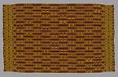

Traditional Crafts: Kente Weaving
Kente is a traditional woven textile associated with the Asante and Ewe peoples of Ghana. Made from narrow strips of woven fabric, Kente is celebrated for its intricate patterns, vibrant colours, and cultural significance. Historically associated with royalty and prestige, it remains an important expression of Ghanaian cultural heritage.
Source: The Metropolitan Museum of Art
Explore the History of Kente →